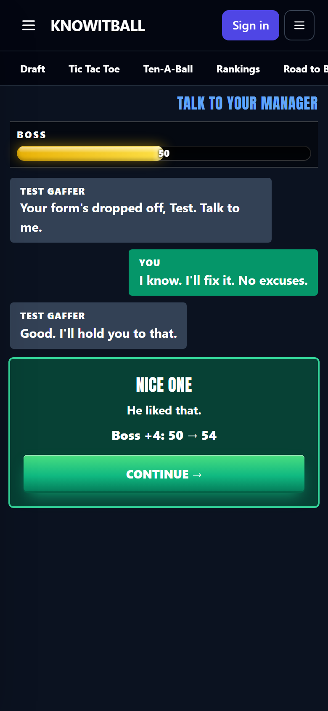
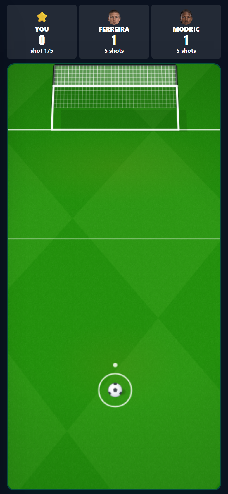
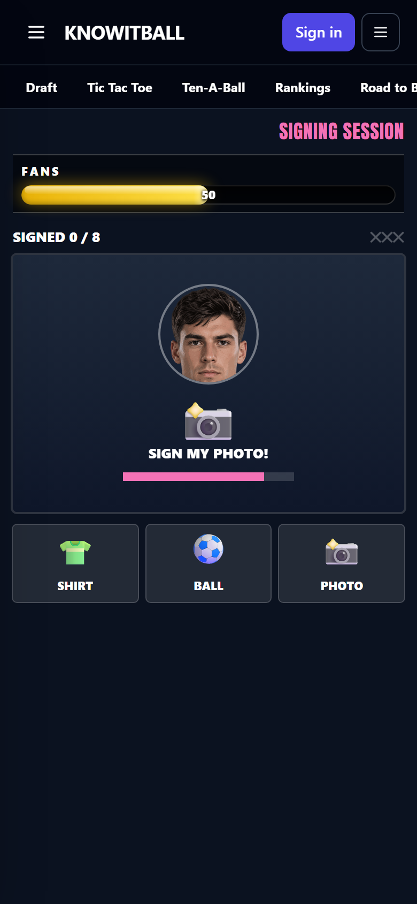
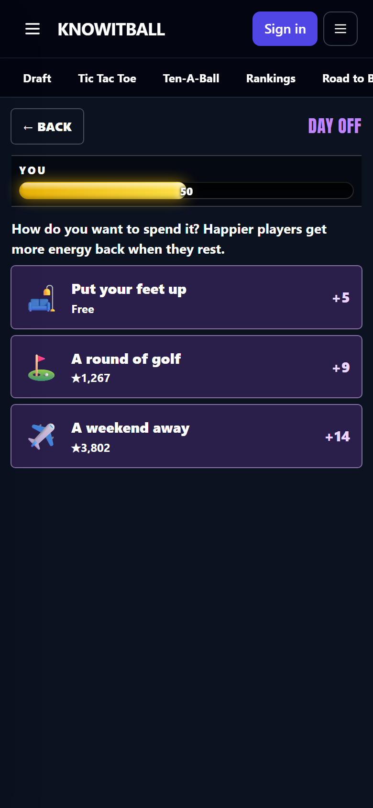
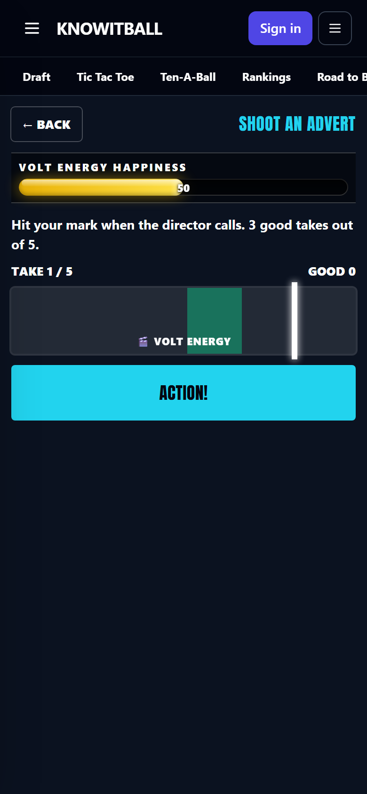
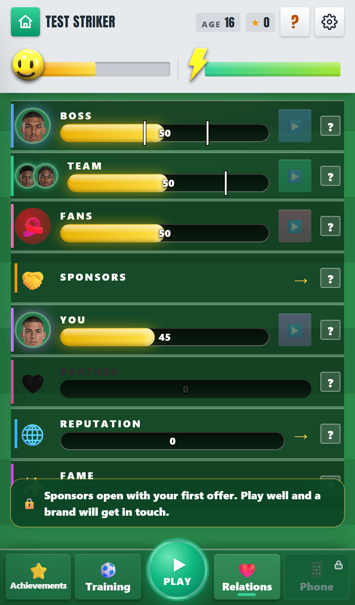

~20 → neverMatches until an average player's bars are all at 100
1 → 5Relationship games: one each, instead of one memory game for all
0.7× – 1.3×Energy back from rest, by your happiness
OffInjuries, until their revamp
Every relationship game, on a test player
Admin menu → Star Career → Relationship games (/star-relgames-dev).
The Relations page: no Sponsors bar, marks on Boss and Team
Relations, after your first game.
Talk to your manager, Woodwork challenge, Signing session, Day off
Relations → the ▶ on each row. Once a week each.
Shoot an advert
Sponsors → Deals → the 🎬 button on a deal.
Your bars across a season
Play a few matches: an ordinary 6.0–6.6 game moves nothing.
-
The bars no longer fill to 100 straight away
Problem: an average player had boss, team and fans all at 100 within about 20 matches, so the relationship games had nothing left to raise. Why: a 7.0 rating paid +3/+2/+4 a match, goals and star man added more, and nothing ever brought a bar back down. Fix: measured
- An ordinary game (6.0–6.6) moves nothing; 6.7–6.9 is +1. (Your rule.)
- A gain shrinks the closer a bar is to 100; a loss shrinks the closer it is to 0.
- Above 60 a bar eases down 1 every third match; below 40 it eases up 1 every second match.
Bars after one season (46 matches), median of 200 simulated careers:
| Player (average rating) | Before | Now |
|---|
| Struggling (5.9) | B43 T81 F76 | B39 T47 F43 |
| Average (6.7) | all 100 | B68 T67 F82 |
| Good (7.4) | all 100 | B87 T80 F97 |
| Great (8.3) | all 100 | B97 T89 F100 |
-
One game per relationship
Problem: Boss Meeting, Team Bonding, Meet the Fans, Sponsor Event and Take a Break were all the same emoji memory game. Over 60, a win paid +1 and a loss cost −4. Fix: a game for each, played once a week, using a day. seen
| Relationship | Game |
|---|
| Boss | Talk to your manager. He raises something from your real situation (benched, flying, out of form, settling in). Pick one of three replies; his style (trusting, demanding, rotational) decides which lands. There is always one right answer. |
| Team | Woodwork challenge. Five shots at an empty goal with the real ball and kick, on a close camera. Hit the post or bar; beat or match the best of two team-mates. |
| Fans | Signing session. Tap the shirt, ball or photo each fan holds before they walk off. More famous, longer queue. Lose 3 fans and it's over. |
| You | Day off. Put your feet up (free, +5), golf (+9) or a weekend away (+14). The dear ones cost a share of your weekly wage. No way to fail. |
| A sponsor | Shoot an advert, on each deal. Hit your mark on 3 of 5 takes: that brand's happiness +10 (a miss −3). |
What a win pays: +6 below 40, +4 from 40 to 70, +2 up to 85, +1 half the time above 85. A loss costs 1 (the manager chat 2).





-
Happiness has a job: how well you recover
Problem: happiness only mattered to two sponsor brands. Fix: rest days and Rest give 0.7× the energy at 0 happiness, 1× at 50 and 1.3× at 100. Day off and Rest raise it. measured
-
Relations page: no Sponsors bar, marks on the bars, true "?" lines
Problem: the Sponsors bar changed nothing since each brand got its own happiness; the Fans "?" promised fan mail that isn't in the game. Fix: a Sponsors row that opens the Sponsors screen; white marks on Boss (benched below, captain-ready above) and Team (captain-ready), with no numbers; every "?" line says what the bar really does. seen
